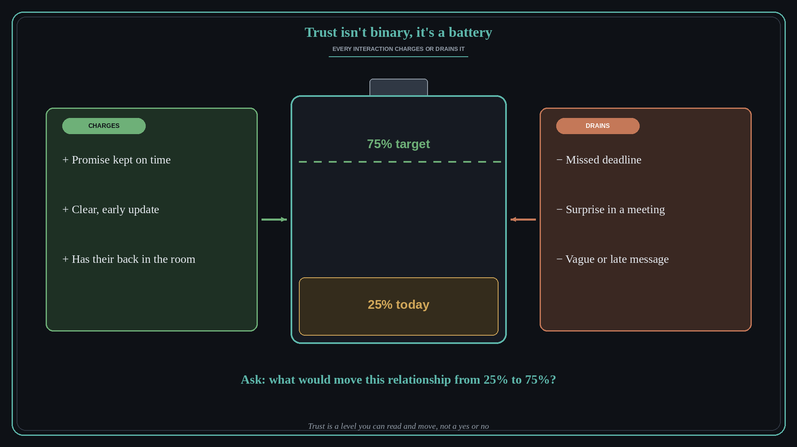

Trust isn't binary, it's a battery
Source: Molly Graham (@molly_g)
original post
What it claims
Molly Graham argues that trust is not a yes-or-no switch but a battery. Every meeting, project, Slack message, and missed deadline either charges it or drains it. In her essay “The Trust Battery” she describes trust as a currency exchanged in every interaction (do I trust this person to execute this project, to lead this initiative, to have my back?), which turns “Do I trust this person?” into a gradient: “My battery is at 25% with this person. What could they do to get it to 75%?”
Why it matters for a PO
A PO lives on borrowed trust: stakeholders let you say no, reorder the roadmap, or take a bet only when their battery with you is high. Surprises, slipped dates, and vague updates drain it quietly, while small promises kept on time charge it. Thinking in levels lets you see where each relationship actually stands and choose a specific action, instead of assuming trust is simply there or gone.
3 takeaways
- Treat trust as a level you can read and move, not a verdict that is fixed.
- Small, frequent interactions (updates, kept promises, dates hit) move the level most.
- Ask the concrete question: what would raise this relationship from 25% to 75%?
Practice this week
List your five most important stakeholders and write a rough battery percentage next to each. For the lowest one, choose one small, visible promise you can make and keep this week, and keep it.